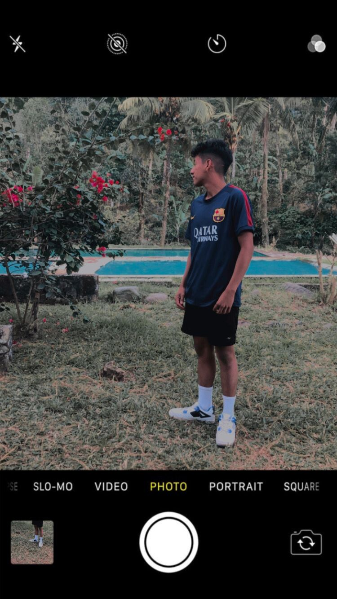
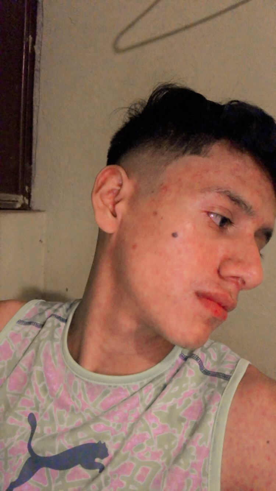
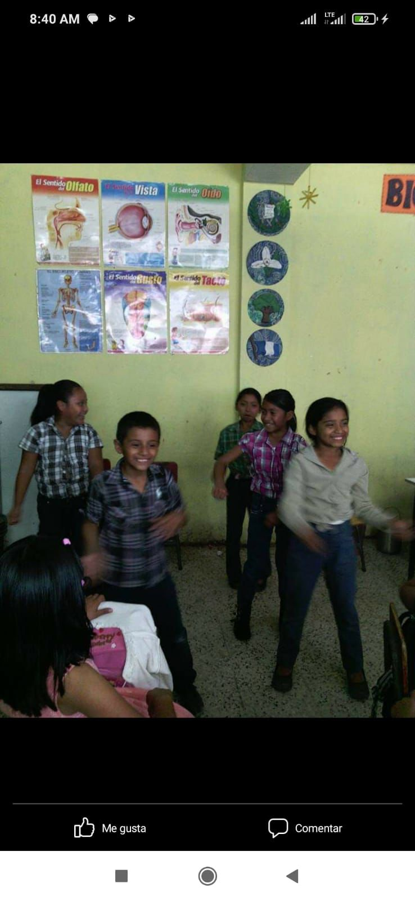
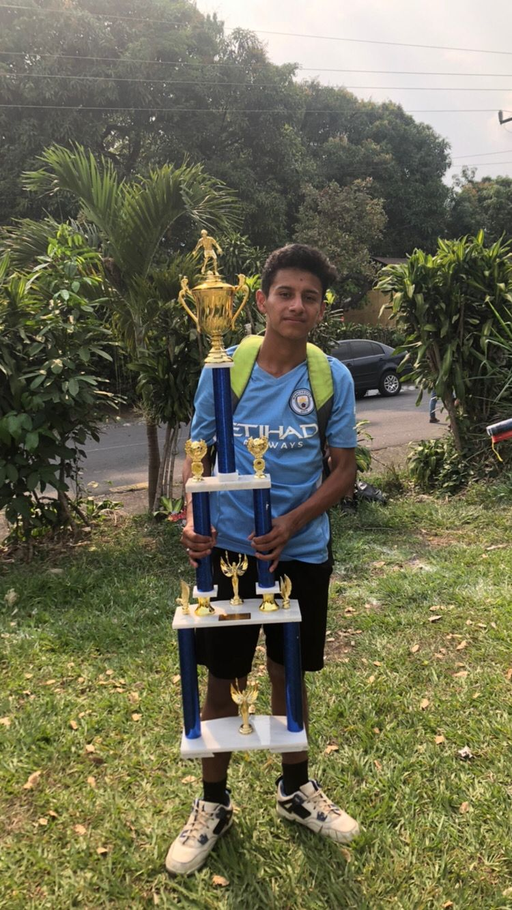

biografia
brayan alexander oscal luis
hola mi nombre es brayan alexander oscal luis tengo 18 años yo naci un 04 de agosto del año 2005 yo naci en el hospital de tiquisate, mi madre
se llama Angwlica Luis Cuc y mi padre Raul oscal.En los primeros meces de vida me costo ya que era un bebe muy propenso a enfermedades en el primer año me lo celebraron con piñata pastel etc.
luego de mi fiesta unos meces despues enferme de pulmonia ya que tenia muy baja las defensas estuve internado como una semana luego mejore
y me trajeron de regreso a pochuta en mi tercer año mi madre se vio obligada a dejarme e irse a trabajar ella me dejo con mi abuela a cargo
ella venia cada fin de semana a verme. En el año 20011 entre a pre primaria en la Escuela de San Rafael mi maestra de pre primaria fue Ester

en los primeros grados de primaria no tuve mayor problema tenia buenas notas era un niño bien portado inquieto pero me portaba bien, en el grado de
cuarto hubo un campeonato entre escuelas en el cual saimos campeones en nuestro municipio, ese año salimos de pochuta para representarlo futbolisticamente
lamentablemente perdimos contra el municipio de Itzapa.

En el año 2019 imgrese al instituto Carlos Luttman en ese año huvieron muchos alti bajos en mi vida tuve que dejar a muchos conocidos amigos en ese añ
conoci nuevos amigos en el campeonato inter aulas llegamos a semifinales en el cual nos dejo fuera tercero "b" ese mismo año salimos campeones de intermunicipal
fuimos a jugar a Yepocapa
en el año 2020 desgraciadamnete se paro los estudios debido a el comtagio de covid 19 en ese año los metodos de enseñanza fueron distintos ya que ni resibiamos clases,
en ese año baje considerablemente mis notas.
en el año 2021 ibamos dos veces a la semana a recibir clases ya que aun habian muchos contagios de covid 19 en ese año tuviumos la desgracia de que un conocido
enfermo de covid 19 en ese año tambien mi madre enfermo grabe y la llevaron a el centro tambien en ese año fue mi primer campeonato municipal en donde con mi equipo
quedamos en segundo lugar .

en el año actual no es que me este yendo muy bien pero por el momento en elo que llevo de año esta bien sali campeon de una cuafrangular etc.